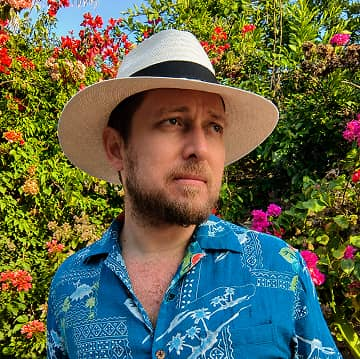

Home
About Me
Hi, I'm Sebastián Iturralde, from Ibarra, Ecuador, currently based in Quito. I began this journey as a marketing instructor at ITQ, where I was encouraged to pursue certifications — and discovered an unexpected passion for programming along the way.
That discovery led me to BYU Pathway's Web and Computer Programming Certificate, where I've studied Python, C#, HTML, CSS, and JavaScript. I'm now finishing WDD 231 - Frontend Web Development I, the final course of the certificate.
I'm a curious, self-driven learner. Welcome to my portfolio — explore my projects and see what I've been building.
Student Photo
